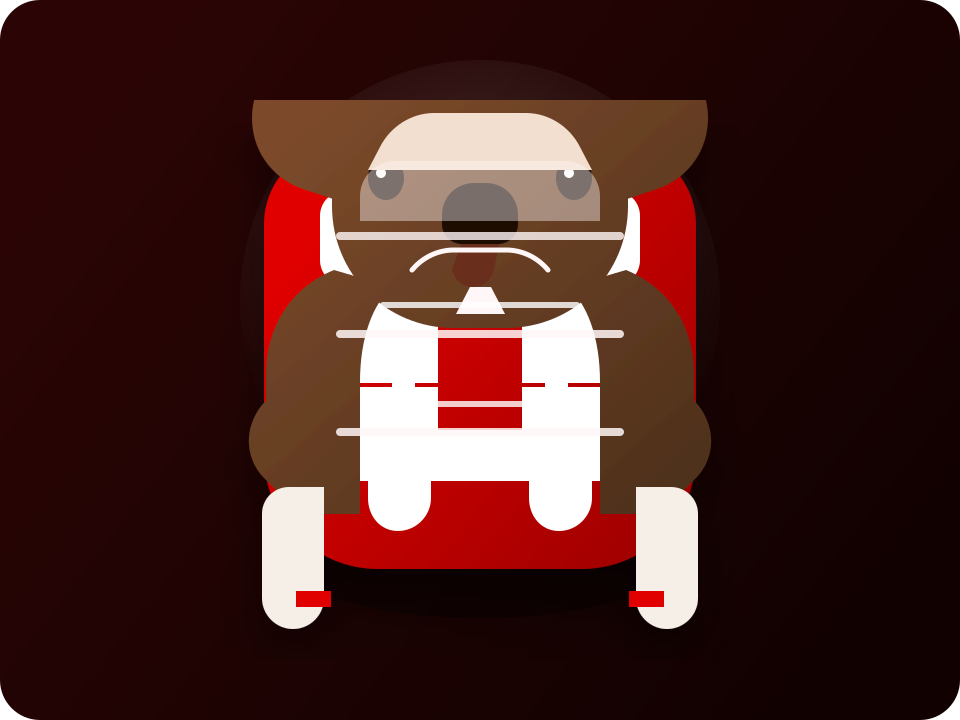

Ein Gruß aus Stuttgart
Rot-weiße Akzente, klarer Kontrast und ein kräftiger Auftritt bringen den VfB-Vibe direkt auf die Seite.

Stuttgart ist die Landeshauptstadt von Baden-Württemberg und verbindet moderne Technik, starke Fußballkultur und grüne Hügel zu einer Stadt mit ganz eigenem Charakter.
Rot-weiße Akzente, klarer Kontrast und ein kräftiger Auftritt bringen den VfB-Vibe direkt auf die Seite.
